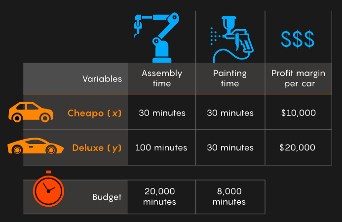

Contents
LP01¶
Collection of Linear Programming (LP) exercises¶
See the section about Linear Programming before working on the exercises.
Example 1: Car factory¶

Source: quantamagazine (2021-11-01).
c = -[ 10000 20000 ]; % Maximize profit margin
A = [ 30 100; ...
30 30 ];
b = [ 20000; 8000 ];
Aeq = []; % No equality constraints
beq = [];
lb = [ 0 0 ];
ub = [ inf inf ];
CTYPE = repmat ('U', 2, 1); % Octave: A(i,:)*x <= b(i)
x0 = []; % default start value
%[x,fval,exitflag] = linprog(c,A,b,Aeq,beq,lb,ub,x0) % Matlab: exitflag=1 success
[x,fval,exitflag] = glpk(c,A,b,lb,ub,CTYPE) % Octave: exitflag=0 success
x =
95.238
171.429
fval = -4.3810e+06
exitflag = 0
This result is of course very “technical” and needs interpretation to be useful for the car company.
The quantity of produced cars should be integers. A safe strategy is rounding the results down:
cheapo = floor (x(1))
deluxe = floor (x(2))
cheapo = 95
deluxe = 171
The computed profit fval is negative.
However to adapt to the standard form of a minimization problem,
the objective function was negated.
Furthermore, after rounding the values, the new profit can be computed from the objective function:
profit = -c * [cheapo; deluxe] % dollar
profit = 4370000
Finally,
the budgets for the painting and assembly line time can be checked with A and b:
required_time = A * [cheapo; deluxe] % minutes
required_time =
19950
7980
permitted_time = b % minutes
permitted_time =
20000
8000
Thus the problem is optimally solved. Not a single deluxe or cheapo could be manufactured with the given time budget:
remaining_budget = permitted_time - required_time % minutes
remaining_budget =
50
20
Example 2: Alloy production¶
Source: [LY16] (p. 27).
A manufacturer wishes to produce an alloy that is, by weight, 30 % metal A and 70 % metal B. Five alloys are available at various prices as indicated below:
The desired alloy will be produced by combining some of the other alloys. The manufacturer wishes to find the amounts of the various alloys needed and to determine the least expensive combination. Formulate this problem as a linear program.
c = [ 5 4 3 2 1.5 ]; % Minimize price
A = []; % No inequality constraints
b = [];
Aeq = [ 10 25 50 75 95; ...
90 75 50 25 5 ];
beq = [ 30; 70 ];
lb = zeros(5,1);
ub = +inf(5,1);
CTYPE = repmat ('S', 2, 1); % Octave: A(i,:)*x = b(i)
x0 = []; % default start value
%[x,fval,exitflag] = linprog(c,A,b,Aeq,beq,lb,ub,x0) % Matlab: exitflag=1 success
[x,fval,exitflag] = glpk(c,Aeq,beq,lb,ub,CTYPE) % Octave: exitflag=0 success
x =
0
0.9000
0
0.1000
0
fval = 3.8000
exitflag = 0
Example 3: Oil refinery¶
Source: [LY16] (p. 28).
An oil refinery has two sources of crude oil: a light crude that costs 35 dollar/barrel and a heavy crude that costs 30 dollar/barrel. The refinery produces gasoline, heating oil, and jet fuel from crude in the amounts per barrel indicated in the following table:
The refinery has contracted to supply 900,000 barrels of gasoline, 800,000 barrels of heating oil, and 500,000 barrels of jet fuel. The refinery wishes to find the amounts of light and heavy crude to purchase so as to be able to meet its obligations at minimum cost. Formulate this problem as a linear program.
% Formulation with equality constraints not solvable.
c = [ 35 30 ]; % Minimize price
A = []; % No inequality constraints
b = [];
Aeq = [ 0.3 0.3; ...
0.4 0.2; ...
0.3 0.2 ];
beq = [ 900000; 800000; 500000 ];
lb = zeros(2,1);
ub = +inf(2,1);
CTYPE = repmat ('S', 3, 1); % Octave: A(i,:)*x = b(i)
x0 = []; % default start value
%[x,fval,exitflag] = linprog(c,A,b,Aeq,beq,lb,ub,x0) % Matlab: exitflag=1 success
[x,fval,exitflag] = glpk(c,Aeq,beq,lb,ub,CTYPE) % Octave: exitflag=0 success
glp_simplex: unable to recover undefined or non-optimal solution
x =
NA
NA
fval = NA
exitflag = 10
% Formulation with inequality constraints.
c = [ 35 30 ]; % Minimize price
A = -[ 0.3 0.3; ...
0.4 0.2; ...
0.3 0.2 ];
b = -[ 900000; 800000; 500000 ];
Aeq = []; % No equality constraints
beq = [];
lb = zeros(2,1);
ub = +inf(2,1);
CTYPE = repmat ('U', 3, 1); % Octave: -A(i,:)*x <= -b(i)
x0 = []; % default start value
%[x,fval,exitflag] = linprog(c,A,b,Aeq,beq,lb,ub,x0) % Matlab: exitflag=1 success
[x,fval,exitflag] = glpk(c,A,b,lb,ub,CTYPE) % Octave: exitflag=0 success
x =
1.0000e+06
2.0000e+06
fval = 9.5000e+07
exitflag = 0
-A * x + b % barrel overproduction
ans =
0
0
200000
Example 4: Car parts¶
Source: [LY16] (p. 28-29).
A small firm specializes in making five types of spare automobile parts. Each part is first cast from iron in the casting shop and then sent to the finishing shop where holes are drilled, surfaces are turned, and edges are ground. The required worker-hours (per 100 units) for each of the parts of the two shops are shown below:
The profits (in dollar per 100 units) from the parts are 30, 20, 40, 25, and 10, respectively. The capacities of the casting and finishing shops over the next month are 700 and 1,000 worker-hours, respectively. Formulate the problem of determining the quantities of each spare part to be made during the month so as to maximize profit.
c = -[ 30 20 40 25 10 ]; % Maximize profit
A = []; % No inequality constraints
b = [];
Aeq = [ 2 1 3 3 1; ...
3 2 2 1 1 ];
beq = [ 700; 1000 ];
lb = zeros(5,1);
ub = +inf(5,1);
CTYPE = repmat ('S', 2, 1); % Octave: A(i,:)*x = b(i)
x0 = []; % default start value
%[x,fval,exitflag] = linprog(c,A,b,Aeq,beq,lb,ub,x0) % Matlab: exitflag=1 success
[x,fval,exitflag] = glpk(c,Aeq,beq,lb,ub,CTYPE) % Octave: exitflag=0 success
x =
0
400
100
0
0
fval = -12000
exitflag = 0
Example 5: Transport cost minimization¶
Source: [LY16] (p. 29).
A large textile firm has two manufacturing plants, two sources of raw material, and three market centers. The transportation costs (dollar per ton) between the sources and the plants and between the plants and the markets are as follows:
Ten tons are available from source 1 and 15 tons from source 2. The three market centers require 8 tons, 14 tons, and 3 tons. The plants have unlimited processing capacity.
Formulate the problem of finding the shipping patterns from sources to plants to markets that minimizes the total transportation cost.
Reduce the problem to a single standard transportation problem with two sources and three destinations. (Hint: Find minimum cost paths from sources to markets.)
A1 = [ 1 1.5; ...
2 1.5 ];
A2 = [ 4 2 1; ...
3 4 2 ];
% Minimize transport cost.
%
% x = [ S1 to A to M1,
% to M2,
% to M3,
% S1 to B to M1,
% to M2,
% to M3,
% S2 to A to M1,
% to M2,
% to M3,
% S2 to B to M1,
% to M2,
% to M3 ]
c = [ A1(1,1) + A2(1,:), ...
A1(1,2) + A2(2,:), ...
A1(2,1) + A2(1,:), ...
A1(2,2) + A2(2,:) ];
A = []; % No inequality constraints
b = [];
Aeq = [ 1 1 1 1 1 1 0 0 0 0 0 0; ... % Sum of Source 1
0 0 0 0 0 0 1 1 1 1 1 1; ... % Sum of Source 2
1 0 0 1 0 0 1 0 0 1 0 0; ... % Sum of Market 1
0 1 0 0 1 0 0 1 0 0 1 0; ... % Sum of Market 2
0 0 1 0 0 1 0 0 1 0 0 1 ]; % Sum of Market 3
beq = [ 10; 15; 8; 14; 3 ];
lb = zeros(12,1);
ub = +inf(12,1);
CTYPE = repmat ('S', 5, 1); % Octave: A(i,:)*x = b(i)
x0 = []; % default start value
%[x,fval,exitflag] = linprog(c,A,b,Aeq,beq,lb,ub,x0); % Matlab: exitflag=1 success
[x,fval,exitflag] = glpk(c,Aeq,beq,lb,ub,CTYPE); % Octave: exitflag=0 success
x'
fval
exitflag
ans =
0 10 0 0 0 0 0 4 3 8 0 0
fval = 91
exitflag = 0